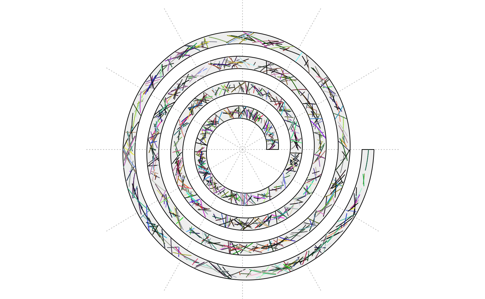

spiral_segments.RdAdd segments to a track
spiral_segments(x0, y0, x1, y1, gp = gpar(), arrow = NULL,
track_index = current_track_index(), buffer = 10000)X-locations of the start points of the segments.
Y-locations of the start points of the segments.
X-locations of the end points of the segments.
Y-locations of the end points of the segments.
Graphical parameters.
A arrow object.
Index of the track.
Number of segments to buffer.
The segments on spiral are not straight lines while are more like curves. This means a spiral segment is formed by a list of real straight segments.
If there are n1 spiral segments, then there will be n2 straight segments where n2 is normally much larger than n1. To speed up drawing the spiral segments,
the locations of the "real" segments are filled to a temporary data frame with buffer rows, when the number of rows exceeds buffer, grid.segments
is called to draw all the buffered segments.
No value is returned.
n = 1000
x0 = runif(n)
y0 = runif(n)
x1 = x0 + runif(n, min = -0.01, max = 0.01)
y1 = 1 - y0
spiral_initialize(xlim = range(c(x0, x1)))
spiral_track()
spiral_segments(x0, y0, x1, y1, gp = gpar(col = circlize::rand_color(n)))

n = 100
x0 = runif(n)
y0 = runif(n)
x1 = x0 + runif(n, min = -0.01, max = 0.01)
y1 = 1 - y0
spiral_initialize(xlim = range(c(x0, x1)))
spiral_track()
spiral_segments(x0, y0, x1, y1, arrow = arrow(length = unit(2, "mm")),
gp = gpar(col = circlize::rand_color(n, luminosity = "bright"), lwd = runif(n, 0.5, 3)))
